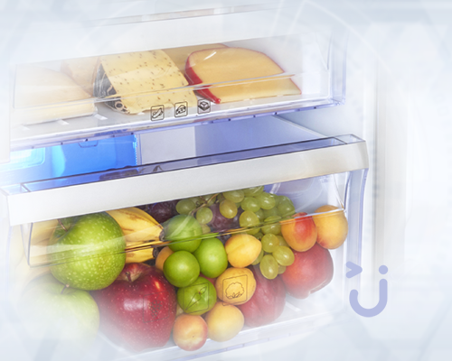
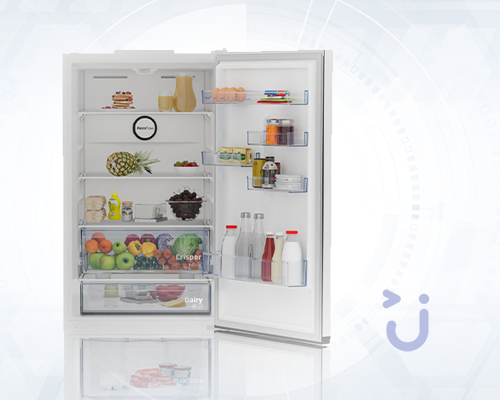
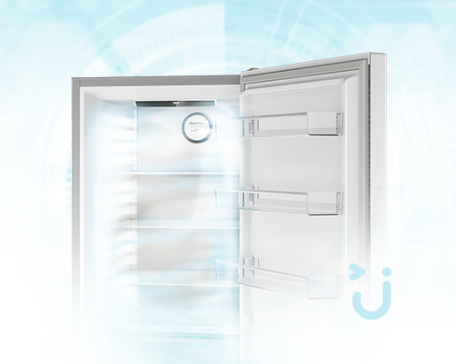
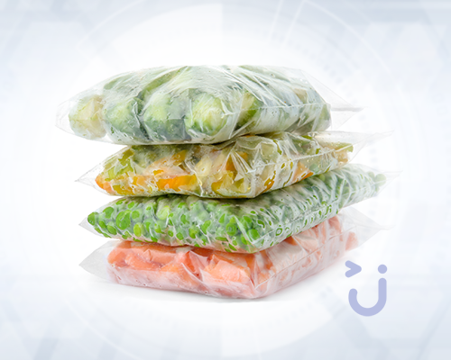
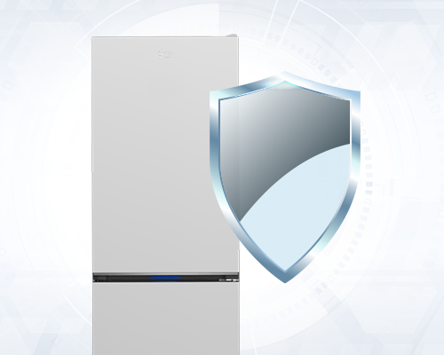
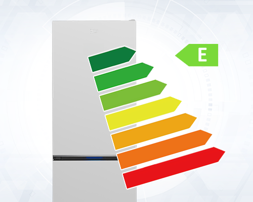
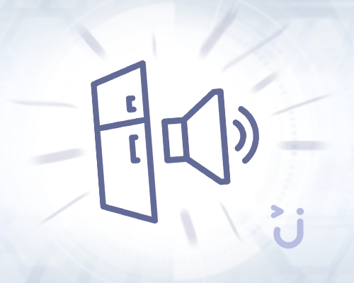

Beko 670475 MB No Frost Buzdolabı
Beko 670475 MB buzdolabı, kullanıcılarına üstün bir performans sunarken modern mutfaklara şıklığıyla mutfaklara kolaylıkla uyum sağlar. Beko 670475 MB no frost teknolojisiyle donatılmış olmakla birlikte düşük enerji tüketimi ile dikkat çeker. Ürün, tasarımından teknolojik özelliklerine kadar birçok fayda sunar. 670475 mb buzdolabı, yalnızca göz alıcı görünümüyle değil, aynı zamanda üstün teknolojik altyapısıyla da beğeni kazanır. Beko 670475 MB, enerji verimliliği ve sessiz çalışma gibi özellikleriyle yaşam alanlarına konfor katarken mutfaktaki diğer dekoratif unsurlarla uyum gösterir. Modern mutfaklar için ideal bir seçim olan Beko 670475 mb buzdolabı, uzun yıllar güvenilir kullanım sağlamak amacıyla yüksek kaliteli malzemelerle üretilir. Yenilikçi tasarımı ve ileri teknolojisi ile mutfakta fark yaratan bu cihaz, kullanıcılarına sunduğu konfor ve performansla öne çıkar.

Beko 670475 MB ile Şıklık ve Verimliliği Bir Araya Getiren Buzdolabı Deneyimi
Beko 670475 MB buzdolabı, hem şıklık hem de verimliliği bir araya getirir. Mutfakta görsel açıdan hoş bir dokunuş sağlarken kullanıcıya yüksek performans sunar. Bu modelin en temel vaadi, yiyeceklerinizi daima taze tutarken enerji tasarrufu sağlamaktır. Estetik açıdan modern bir tasarıma sahip olan beko 670475 mb buzdolabı, her detayında zarafet sunar. Hem görsel hem de işlevsel avantajları bir araya getirerek mutfağınızı aydınlatır. 670475 mb modeli, mutfak düzeninize uyum sağlayan yapısı ile dikkat çeker. Ürünün şıklık ve estetikten ödün vermeden işlevselliği ön planda tutar. Bu A++ enerji sınıfı buzdolabı ileri teknoloji ile donatıldığı için günlük kullanım sırasında oldukça kolay bir deneyim yaşamanız mümkündür. Konforu ve kaliteyi bir arada yaşamak isteyenler için ideal bir seçenektir.

Kompakt Tasarım, Etkili Soğutma: 670475 MB’nin Temel Özellikleri
670475 mb buzdolabı modelinin kompakt boyutlu tasarımı bir yandan mutfakta çok yer kaplamazken diğer yandan geniş bir iç hacim sunar. 400 litre civarı buzdolabı arayışında olanlar için yaklaşık 400 litre kapasitesi ile geniş bir saklama alanı yaratır. İç tasarımda yer alan ergonomik raf düzeni, her türlü yiyeceğin düzenli bir şekilde yerleştirilmesine imkan tanır. Gelişmiş raf sistemi sayesinde meyve ve sebzelerinizi ayrı bölmelerde muhafaza edebilirsiniz. Farklı raf yüksekliği opsiyonları ile büyük tencere ve şişeler için de yeterli alan yaratabilirsiniz. Ayrıca daha fazla esneklik ve saklama konforu sağlamak amacıyla buzdolabının rafları kolayca çıkarılabilir ve temizlenebilir.
670475 mb Beko tasarımına entegre edilen yenilikçi soğutma sistemi, sıcaklık dağılımını optimize ederek her rafa eşit soğutma sağlar. Bu özellik, yiyeceklerin her zaman taze ve lezzetli kalmasını sağlarken gıda israfının da önüne geçer. Soğutma teknolojisi, enerji verimliliğini destekleyerek hem bütçenize hem de çevreye dost bir çözüm sunar. Donmuş ürünlerin kalitesini korumak için ideal sıcaklık ayarlarını dilediğiniz gibi ayarlayabilirsiniz.

No Frost Teknolojisi ile Donmaya Son, Tazeliğe Devam
Beko 670475 mb no frost buzdolabı, modern mutfak gereksinimlerine uygun etkili bir çözümdür. Karlanma sorunu sık karşılaşılan bir durumken, no frost sistemiyle bu zorluktan tamamen kurtulabilirsiniz. Sürekli hava sirkülasyonu sağlayan gelişmiş teknolojisi sayesinde buzlanma engellenir. Bu sayede buzdolabı içindeki sıcaklık her zaman eşit dağılır ve bu da yiyeceklerin taze ve hijyenik kalmasını sağlar. Buz oluşmadığından düzenli olarak buzdolabını temizleme ihtiyacı ortadan kalkar, bu da kullanım rahatlığı ve zaman tasarrufu sağlar.
Yiyeceklerinin uzun süre taze kalmasını sağlamak gıda israfını minimuma indirger. Sabah kahvaltısı veya öğle yemeği hazırlıkları sırasında buzdolabındaki yiyeceklerin tazeliğinden emin olabilirsiniz. Ayrıca, no frost teknolojisi yalnızca gıdaların korunmasında avantaj sağlamaz, aynı zamanda buzdolabının bakımını da kolaylaştırır. Buzlanma ortadan kalktığında buzdolabının iç aksamları daha az yıpranır ve uzun ömürlü kullanılabilir. Bu özellik, hem günlük kullanımda kolaylık hem de uzun vadede tasarruf sağlar. Çift kapılı no frost buzdolabı gibi temizliği zorlayıcı olabilecek modellerde dahi kullanıcıyı memnun eder.

Dayanıklı Malzeme Kalitesi
Beko 670475 mb buzdolabı, estetik dış yüzeyi ve dayanıklı malzeme kalitesiyle öne çıkar. Çizilmelere karşı direnç gösteren yapısı, buzdolabınızın uzun yıllar boyunca ilk günkü yeniliğini korumasını sağlar. Bu özelliği, özellikle yoğun kullanımlarda bile ürünün dayanıklılığı ile ön plana çıkmasına yardımcı olur. Dış kaplamasının kalitesi ve tasarımındaki ince işçilik, bu modeli uzun vadede hem ekonomik hem de estetik açıdan cazip bir seçenek haline getirir.
Estetik Dış Yüzey
Modern kaplama rengi, mutfağınıza şıklık katar ve çağdaş bir görünüm sunar. Mutfak uyumlu modern buzdolabı olarak dekorasyonunuzun her detayıyla estetik bir uyum elde etmenizi kolaylaştırır. Beko 670475 mb buzdolabının dış yüzeyi, sadece estetik değil aynı zamanda pratik bir kullanımı da beraberinde getirir. Leke tutmayan yüzeyi, temizlik işlemlerinin daha hızlı ve zahmetsiz olmasına olanak tanır. Böylece hijyen standartlarını yüksek tutmanıza katkı sağlar. Tüm bu özellikleri ile Beko 670475 mb, sadece bir beyaz eşya değil, aynı zamanda mutfağınızın vazgeçilmez bir parçası haline gelme potansiyeli taşır.

A++ Enerji Verimliliği ile Ekonomik Soğutma Performansı
Beko 670475 mb buzdolabı, A++ enerji sınıfındaki üstün performansı sayesinde enerji tüketimini en aza indirir. Bu tasarruf, özellikle elektrik faturalarınızda belirgin bir azalma sağlar ve uzun vadede bütçe dostu bir seçenek haline gelir. Aynı zamanda çevre dostu bir ürün olarak öne çıkan bu buzdolabı, daha az enerji harcayarak karbon ayak izinizi azaltmaya yardımcı olur. Doğaya zarar vermeden soğutma ihtiyaçlarınızı karşılar. Beko'nun yenilikçi mühendisliği, enerji verimliliğini en üst düzeye çıkarırken, ürünün çalışma performansından ödün vermez. Bu da kullanıcıya hem ekonomik hem de ekolojik açıdan avantaj sunan bir deneyim yaşatır. Güçlü yalıtım sistemi ve optimize edilmiş kompresörleri ile enerji kayıplarını minimuma indirir. Böylece her mevsim maksimum verim elde etmenizi sağlar. Uzun ömürlü ve güvenilir yapısıyla sürdürülebilir bir yaşam tarzının kapılarını açar. Küçük aileler için uygun buzdolabı gibi beklentileri de karşılayan bu buzdolabı, enerji verimliliği için teknoloji ve tasarımı bir araya getirir.

Jebinde ile Hızlı Teslimat ve Güvenilir Alışveriş Deneyimi
Beko 670475 mb buzdolabını buzdolabı çeşitleri arasından güvenle seçip Jebinde'den satın alabilirsiniz. Jebinde, kullanıcılarına en kaliteli hizmeti sunarak alışverişi güvenli ve zahmetsiz bir deneyim haline dönüştürmeyi hedefler. Yetkili satıcı garantisi ile ürünleriniz üzerinde eksiksiz bir güvenceye sahip olabilirsiniz. Ürünlerinizi hızlı bir şekilde adresinize ulaştırarak zamandan tasarruf edebilirsiniz. İade süreci, müşterilerin ihtiyaçlarına göre esnek bir şekilde tasarlanmıştır, bu da istenmeyen durumlarda çözüme kolayca ulaşmanıza olanak sağlar.
Uzman müşteri desteği ekibi her türlü soru ve probleminizde size destek sunar, alışverişte maksimum memnuniyet sağlamayı amaçlar. Jebinde'nin sunduğu tüm bu avantajlar, alışveriş sürecinde her adımda yanınızda olmasını sağlarken güvenle alışveriş yapmanızı da güvence altına alır.